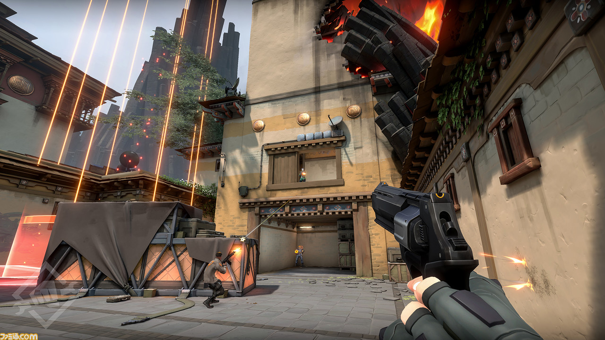

今自分の中で最も熱いゲームを紹介します!!
VAROLANT ←クリックで公式サイトに飛びます

基本ルール：13本先取の5対5爆破マッチ
『ヴァロラント』の基本ルールは、『カウンターストライク』系の対戦FPSでおなじみの、いわゆるボムモード（爆破モード）。
5対5で攻撃側チームと防衛側チームに分かれ、攻撃側はマップ内に複数ある攻略目標いずれかの爆破、防衛側はその阻止を目指す。
1試合は全25ラウンドで構成され、前半12ラウンドが終わると攻守交代。最終的に13本先取したチームがその試合の最終的な勝者となる。各ラウンドの勝利条件は以下の通り。
[攻撃側勝利条件1]防衛側を全滅させる
[攻撃側勝利条件2]100秒以内に爆弾（スパイク）を設置し、かつ解除されずに爆破に成功する
爆弾設置後に全滅し、防衛側が解除に間に合わなかった場合も攻撃側の勝ち
[防衛側勝利条件1]爆弾設置前に攻撃側を全滅させる
[防衛側勝利条件2]100秒の制限時間内に爆弾を設置させずに終わる
[防衛側勝利条件3]設置後のカウントダウン中に防衛側が解除成功する
攻守交代時にそれまでに獲得した装備や資金（後述）は一度リセットされる・
12対12で並んだ場合はオーバータイムで25ラウンド目を行って決着をつける
基本プレイ無料でありながらとても軽いPCゲームですので是非一度プレイしてみてください。
紹介したいゲームまだあります!!→ ここをクリック
*掲載サイト:RIOTGAMES